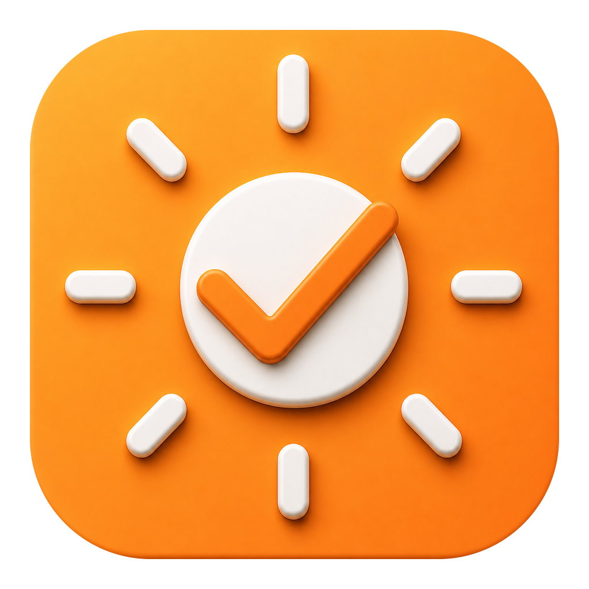
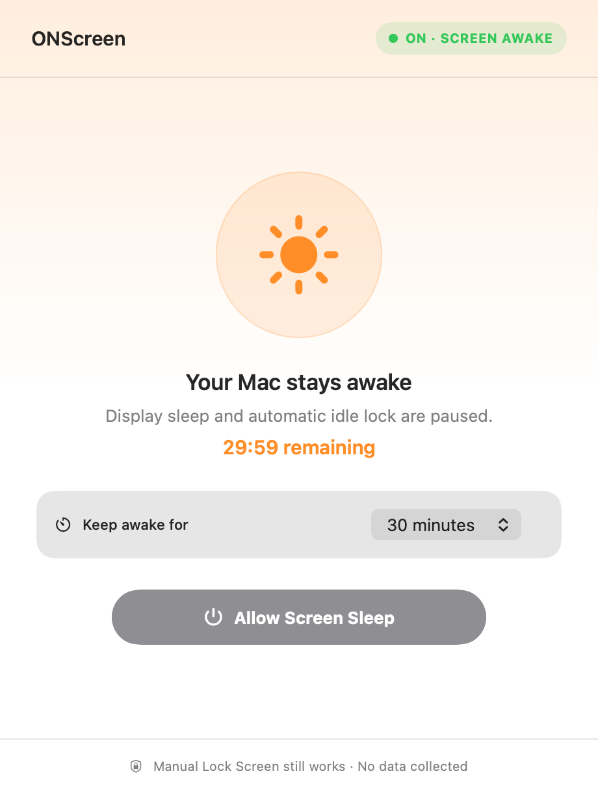
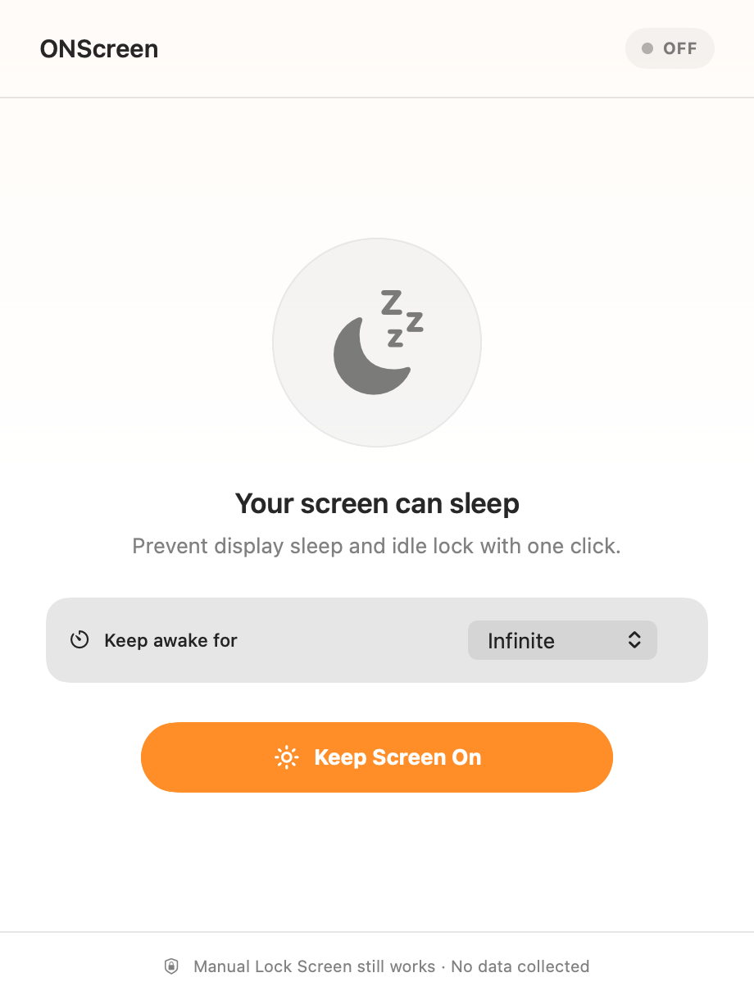

Always deliberate
ONScreen opens OFF. Your display is only held awake after you click the button.

ONScreen DownloadOne click prevents display sleep and automatic idle lock. Choose Infinite, a preset, or type an exact duration.
ONScreen 1.3 · macOS 14 or later · Universal app

Start with Infinite, choose a preset, or type any duration from 1 to 720 minutes. Timed sessions show the exact time left and stop automatically.

ONScreen opens OFF. Your display is only held awake after you click the button.
The window and menu-bar icon clearly distinguish OFF from an active session.
ONScreen postpones automatic idle lock, but you can still lock your Mac manually.
From download to an awake display in under a minute.
Open the DMG and drag ONScreen into Applications. The installer includes a direct Applications shortcut.
Leave Infinite selected, pick a preset, or choose Custom and type from 1 to 720 minutes.
The status changes to ON · SCREEN AWAKE. Close the window if you like—ONScreen remains in the menu bar.
A tiny utility for the ordinary times when macOS sleep gets in the way.
Keep notes, slides, and reference screens visible between interactions.
Leave instructions on screen while your hands are busy.
Watch status boards and long-running work without nudging the trackpad.
Give dense documents and research the time they deserve.
No. You can still use Apple menu → Lock Screen or Control–Command–Q. ONScreen postpones automatic idle lock only while active.
ONScreen releases its display and user-activity assertions, changes to OFF, and allows normal macOS sleep behavior to resume.
The active assertions are released when ONScreen exits, so the app must remain running to keep the display awake.
Yes. ONScreen is a universal macOS app and the website is plain static HTML, CSS, and JavaScript. Neither needs a heavy framework.
The direct-download app checks a public HTTPS appcast and verifies update archives with its embedded Ed25519 public key before installation.
Download ONScreen for presentations, recipes, dashboards, long reads, and everything that deserves to stay visible.
Download ONScreen 1.3 DMG installer · about 4 MB